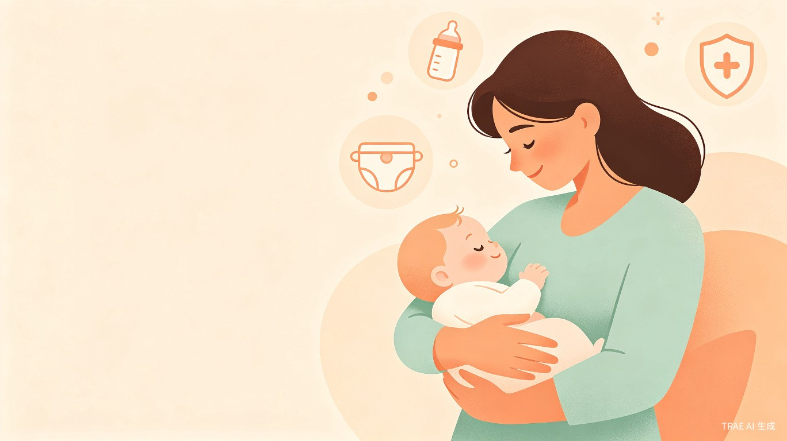

让每一位新手妈妈都能看懂成分、避开雷区、安心选购
一句话定位：面向新手宝妈的「母婴用品安全智能助手」，通过 AI 拍照识别 + 成分大白话解读 + 真实口碑过滤，解决宝妈面对复杂成分表时的信息不对称焦虑。
母婴市场产品种类繁多，纸尿裤、奶粉、辅食、洗护用品的成分表充斥着专业术语和化学名词。新手妈妈往往处于信息弱势地位：看不懂成分、分不清营销话术与真实功效、担心买到含有争议成分的产品。这种信息不对称带来的焦虑，是工具类产品切入的最佳痛点。
本工具不做电商平台，不做内容社区，而是聚焦于「检测与决策辅助」这一单点能力，成为宝妈购物前的「安全守门员」。
第一次当妈妈，对宝宝用品安全极度敏感。会在小红书和妈妈群做功课，但信息太杂、真假难辨。看到成分表里的化学名词就头大，希望能有一个「靠谱的工具」帮她快速判断产品是否安全。愿意为宝宝的健康付费，但不想交智商税。
| 维度 | 特征描述 |
|---|---|
| 年龄分布 | 25-35岁为主，集中在宝宝0-3岁阶段 |
| 地域分布 | 一二线城市占比高，但下沉市场增长快 |
| 消费能力 | 中等偏上，愿意为安全溢价付费 |
| 信息获取习惯 | 小红书、抖音、妈妈群、母婴App |
| 核心痛点 | 成分看不懂、真假难辨、选择困难、怕踩坑 |
| 使用场景 | 线下超市选购、线上购物前比价、收到礼物后查验 |
对准产品包装拍照或扫描条形码，AI自动识别品牌、型号，3秒内返回安全检测报告，标出风险成分和争议添加物。
将成分表中的化学名词翻译成通俗语言，标注每个成分的作用、安全性等级，以及是否适合宝宝当前月龄。
聚合多平台真实用户评价，通过算法过滤水军和广告，呈现「真实好评率」和「高频吐槽点」，帮宝妈避坑。
当检测产品存在风险时，自动推荐成分更安全、性价比更高的替代产品，并给出替换理由和购买链接。
触发方式：首页点击「拍照检测」或「扫码查询」按钮。
识别流程：
输出结果：产品基本信息、安全等级评分、风险成分列表、适用月龄建议。
触发方式：检测报告页点击「查看成分详解」或手动输入成分名搜索。
展示内容：
数据来源：小红书、抖音、淘宝/京东评价、妈妈群聊天记录（脱敏后）。
过滤机制：
输出结果：真实好评率、高频优点、高频吐槽、典型真实评价摘录。
触发条件：检测产品安全等级为C或D，或用户主动点击「找替代品」。
推荐逻辑：
flowchart LR
A[打开App] --> B[点击拍照检测]
B --> C[对准产品包装拍照]
C --> D[AI识别产品信息]
D --> E[查看安全检测报告]
E --> F{安全等级?}
F -->|绿色| G[放心购买]
F -->|黄色| H[查看成分详解]
F -->|红色| I[查看安全平替]
H --> J[决定是否购买]
I --> K[选择替代产品]
| 步骤 | 用户操作 | 系统响应 | 页面状态 |
|---|---|---|---|
| 1 | 打开App，进入首页 | 展示首页，突出「拍照检测」入口 | 首页 |
| 2 | 点击「拍照检测」按钮 | 唤起相机，显示取景框和提示文字 | 相机页 |
| 3 | 对准产品包装，点击拍照 | 显示识别中动画，OCR提取文字 | 识别中 |
| 4 | 确认识别结果或手动修正 | 匹配数据库，生成检测报告 | 检测报告页 |
| 5 | 查看安全等级和成分详情 | 展示绿/黄/红等级、成分列表、口碑摘要 | 检测报告页 |
| 6a | 安全等级为绿色 | 显示「安全可购」标签，提供购买链接 | 检测报告页 |
| 6b | 安全等级为黄色/红色 | 高亮风险成分，推荐「查看平替」 | 检测报告页 |
| 7 | 点击「查看平替」 | 展示同品类安全替代产品列表 | 平替推荐页 |
flowchart LR
A[打开App] --> B[点击搜索框]
B --> C[输入成分名称]
C --> D[查看成分档案]
D --> E[了解安全性评级]
E --> F[查看相关产品和替代方案]
flowchart LR
A[打开App] --> B[进入我的页面]
B --> C[点击检测记录]
C --> D[查看历史检测列表]
D --> E[点击任意记录]
E --> F[重新查看完整报告]
| 页面/模块 | 功能说明 | 入口 |
|---|---|---|
| 首页 | 拍照检测入口、搜索框、热门检测产品、安全资讯 | App启动页 |
| 相机页 | 拍照取景、扫码识别、相册选取 | 首页「拍照检测」 |
| 检测报告页 | 产品信息、安全等级、成分列表、口碑摘要、平替入口 | 相机页识别完成后 |
| 成分详情页 | 成分大白话翻译、安全性评级、适用月龄、权威来源 | 检测报告页点击成分 |
| 口碑详情页 | 真实好评率、高频评价标签、典型评价摘录 | 检测报告页点击口碑 |
| 平替推荐页 | 替代产品列表、对比维度、购买链接 | 检测报告页「查看平替」 |
| 搜索页 | 产品名/成分名搜索、搜索历史、热门搜索 | 首页搜索框 |
| 我的页面 | 检测历史、收藏产品、设置、会员中心 | 底部导航「我的」 |
基础服务免费：每日限次免费检测（如每日3次），基础成分解读和口碑查看免费。
会员增值服务：
电商导购分成：平替推荐中的购买链接跳转至电商平台，按成交收取 CPS 佣金。
| 指标类型 | 具体指标 | 目标值（上线后3个月） |
|---|---|---|
| 用户增长 | 日活跃用户 (DAU) | 10,000+ |
| 用户增长 | 新增用户次日留存率 | ≥ 40% |
| 功能使用 | 人均每日检测次数 | ≥ 2次 |
| 功能使用 | 拍照识别成功率 | ≥ 85% |
| 商业转化 | 会员转化率 | ≥ 3% |
| 商业转化 | 平替推荐点击率 | ≥ 15% |
| 用户满意度 | App Store评分 | ≥ 4.5 |
| 风险 | 影响 | 应对策略 |
|---|---|---|
| 成分数据库不全 | 新产品识别失败，用户体验差 | 建立用户反馈补录机制；与行业数据服务商合作 |
| AI识别准确率不足 | OCR识别错误导致报告不准 | 引入人工审核闭环；允许用户手动修正识别结果 |
| 口碑数据被投诉 | 品牌方投诉负面评价 | 评价数据均来自公开平台；建立申诉和复核机制 |
| 竞品模仿 | 大厂快速跟进类似功能 | 深耕成分数据库壁垒；建立宝妈社区信任资产 |